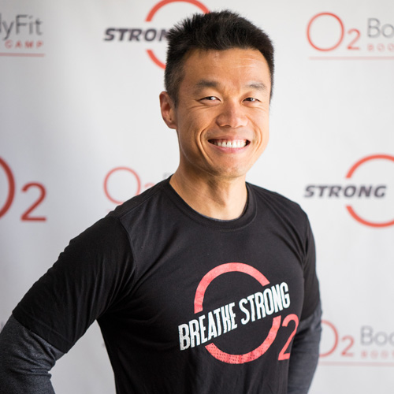

Co-Owner | Certified Personal Trainer

One day in early May 2016, Allen was waiting for the traffic light to turn green at the intersection of Junipero Serra Boulevard and Washington Street when he noticed the O2 BodyFit signage near Interstate 280. He became curious and visited the website. When he learned that we had two Spartan Race certified coaches, he got excited because he was looking for help with training to prepare him for two upcoming Spartan Races. He came in for a free trial workout a few days later and became a member. Prior to that, he had been exercising on his own for over twenty years since freshman year in college. However, he found it challenging to maintain the discipline and motivation for achieving his fitness goals. He would often go to the gym because he had to and not because he wanted to.
The variety of fun group workouts along with a strong community of members and supportive coaches helped Allen find joy again in working out and eventually led him to change his original goal of participating in three Spartan Races to finishing six along with four other obstacle course races by the end of the year. He also got into the best shape of his life along the way and finally had the six-pack abs that he always wanted to have. Throughout the course of his fitness journey with O2 BodyFit, he witnessed the positive impact that our coaches had on him as a member, and he was inspired to pay it forward and help others by becoming a coach.